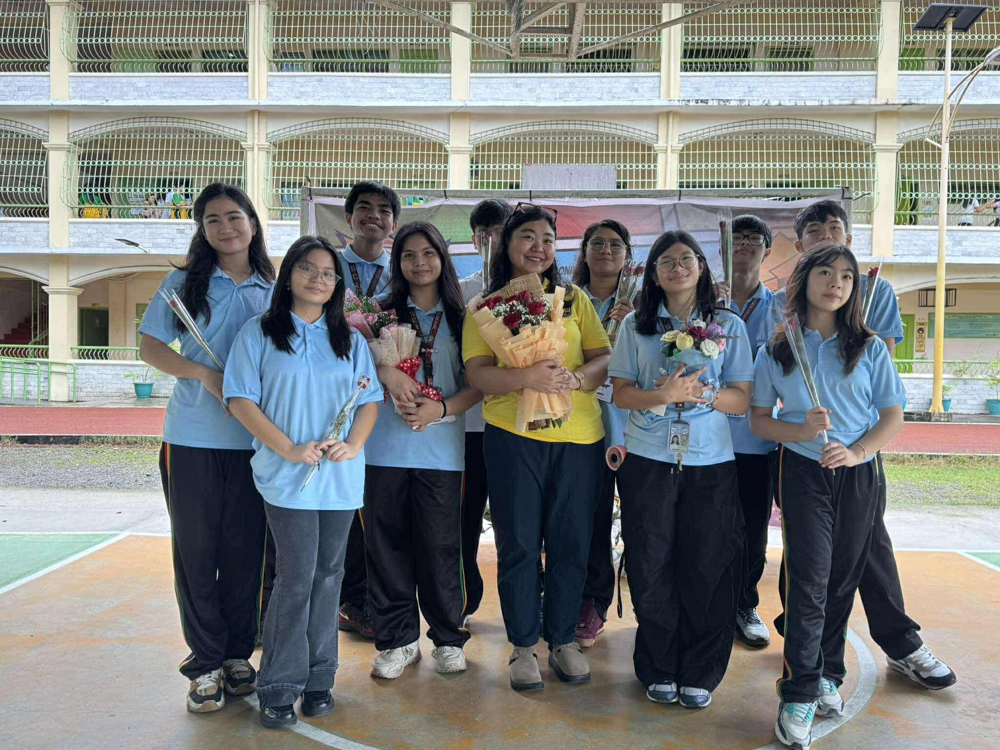
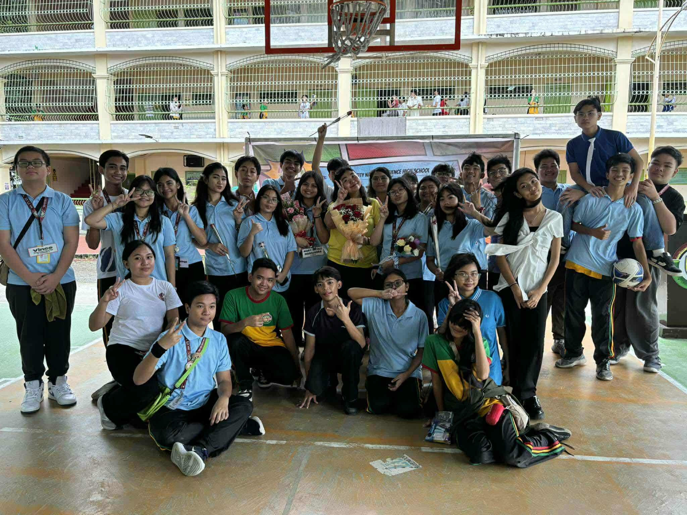

2025-2026
Celebrating Teachers’ Month with my class, 9-Fidelity, at LPSCI was a heartwarming experience that reminded me of the importance of showing gratitude to our teachers. I actively participated in the celebration by joining class activities and helping prepare simple tokens of appreciation for our adviser, Ms. Gia, and our other teachers. Through these efforts, I realized how much time, patience, and dedication they give to guide us not only in academics but also in personal growth. It was a meaningful opportunity to give back, even in small ways, and to express how much we value their hard work.
If I were to teach this to a classmate, I would emphasize the importance of respect and appreciation for teachers by encouraging them to reflect on the positive impact educators have on their lives. I would suggest simple yet thoughtful ways to show gratitude, such as writing letters, creating class presentations, or simply saying thank you. Celebrating Teachers’ Month is important because it reminds us to acknowledge the daily efforts of teachers who shape our future. In real life, I can apply this by continuing to respect my teachers, listening to their guidance, and appreciating their role in my learning journey every day.

